This Codelab explains how to develop WearOS Apps with Jetpack Compose.
"Compose for Wear OS" simplifies and accelerates UI development and helps you create beautiful apps with less code. Currently, it's the most recommended approach for Wear OS Apps Development.
For this codelab, we expect that you have some knowledge of Compose and Kotlin, but you certainly don't need to be an expert.
At this codelab, it starts from the basic sample. And you will learn how to improve Wear OS apps with Jetpack Compose little by little. Finally, you can begin writing your apps for Wear OS. Let's get started!
Wear OS Apps Examples


What you will learn
- How to get started Wear OS Apps Development with Jetpack Compose
- Similarities/differences between Mobile and WearOS experience with Jetpack Compose
- Basic Wear OS composables
- How to optimize screens for Wear OS
- How to improve Wear OS UI & UX with useful composables
Prerequisites
- Basic understanding of Android development
- Basic understanding of Kotlin
- Basic knowledge of Compose
What you will build
At first, you'll build a simple app that displays just a scrollable list of composables. It's just like a simple Contacts App. But there are some problems. Screens aren't optimized for Wear OS. It includes only one screen. Also, it doesn't contain any navigation.
Here are some steps for improving UI & UX.
By modifying the code little by little, finally, you'll find how we develop the Wear OS screens.
Because you will be using Scaffold, you'll also get a curved text time at the top, a vignette, and a scrolling indicator tied to the side of the device.
Here's what it will look like when you finish this codelab:
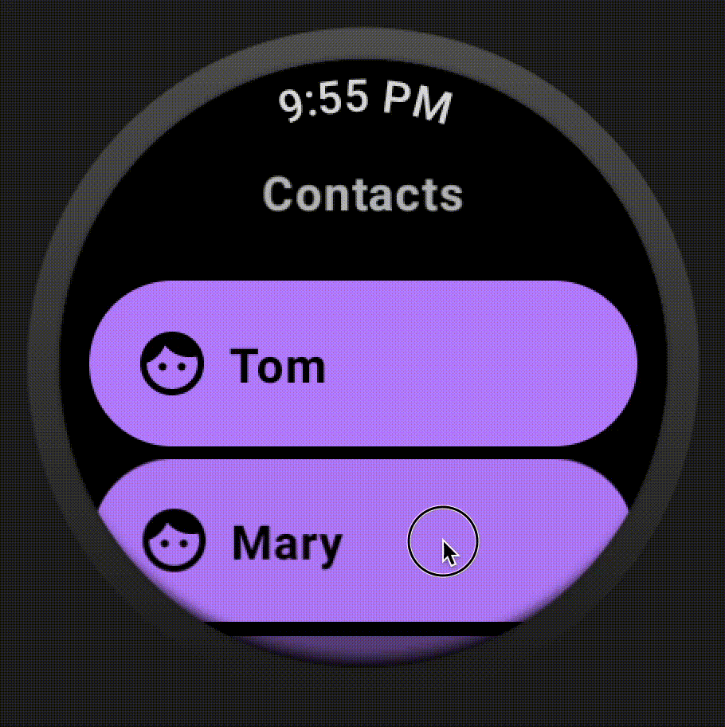
What you will need
- Android Studio
- Mandatory: Dolphin, Electric Eel, or Flamingo
- Recommendation for this workshop: Electric Eel
- Wear OS AVD images
- Recommendation for this workshop: API Level 30 (Shape: Wear OS Small Round)
How to create Wear OS AVD
Setup your Wear OS AVD images like this through Device Manager.

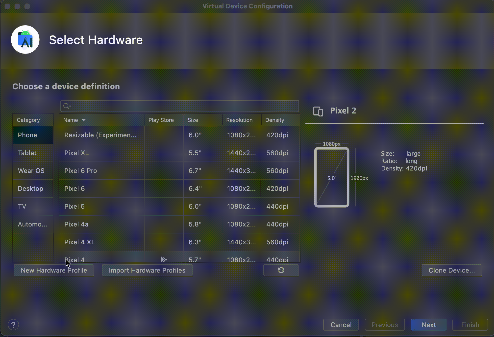
Download code
If you have git installed, you can simply run the command below to clone the code from this repo. To check whether git is installed, type git --version in the terminal or command line and verify that it executes correctly.
git clone https://github.com/korodroid/WearOSComposeCodelab.git
cd WearOSComposeCodelab
If you do not have git, you can click the following button to download all the code for this codelab:
Run the Base App
Open project in Android Studio
- On the Welcome to Android Studio window, select
 Open an Existing Project.
Open an Existing Project. - Select the folder
[Download Location] - When Android Studio has imported the project, test that you can run the
startandfinishedmodules on a Wear OS emulator or physical device. Also, there are some modules such asstep1,step2,step3, andstep4for each step. - The modules should look like the screenshot below. 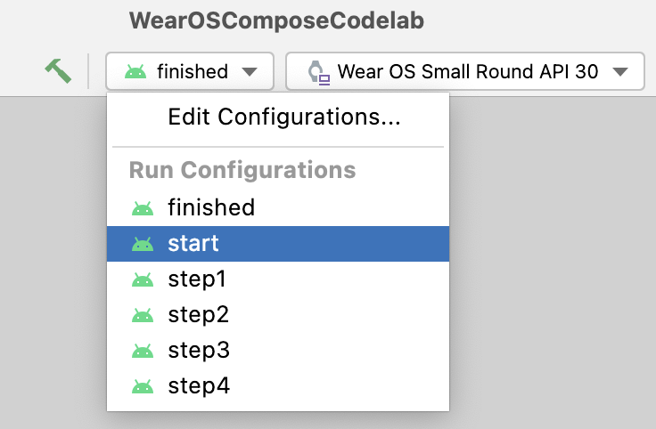
- Choose
startmodule. It's where you will be doing all your work. And just tap theRun(Green Triangle)button like this.
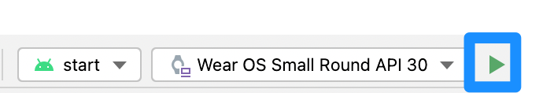
Result
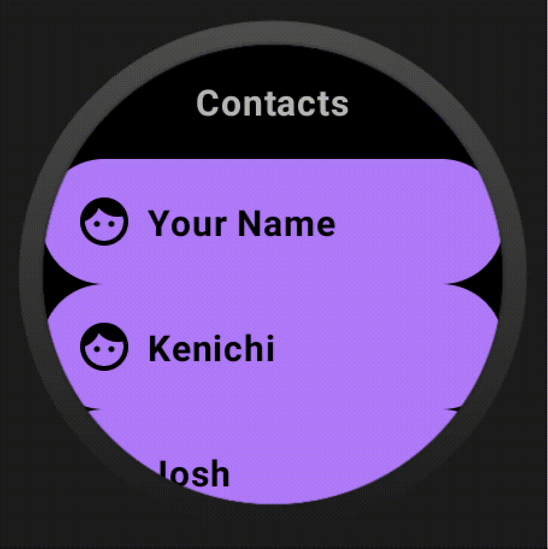
We will do all our work in the
start
module, so make sure every file you open is in there.
Explore the start code
- build.gradle contains a basic app configuration. It includes the dependencies necessary to create a Composable Wear OS App. We'll discuss what's similar and different between Jetpack Compose and the Wear OS version.
- main > AndroidManifest.xml includes the elements necessary to create a Wear OS application. This is the same as a non-Compose app and similar to a mobile app, so we won't review this.
- main > theme/ folder contains the Color, Type, and Theme files used by Compose for the theme.
- main > MainActivity.kt contains boilerplate for creating an app with Compose. It also contains the top-level composables (like the Scaffold and ScalingLazyList) for our app.
Let's start by opening MainActivity in this module.
This is a class that extends ComponentActivity and uses setContent { WearApp() } to create the UI.
Scroll down to this part like this.
val model = ContactDataList(
data = listOf(
ContactData(name = "Your Name", phone = "+81-3-0000-XXXX", nation = "Your Nation"),
ContactData(name = "Kenichi", phone = "+81-3-1111-XXXX", nation = "Japan"),
ContactData(name = "Josh", phone = "+1-3-2222-XXXX", nation = "Kenya"),
// ...
)
If you don't enable your preview screen, just click the Split button like this. You can check your screen without compiling.
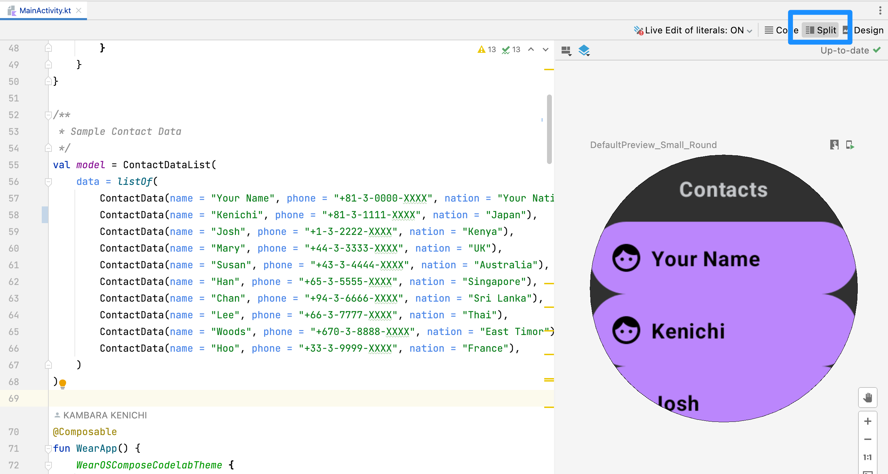
Let's set your name, phone number (it should be a dummy), and nation on the first element like this.
val model = ContactDataList(
data = listOf(
ContactData(name = "Frank", phone = "+1-3-8888-XXXX", nation = "US"),
ContactData(name = "Kenichi", phone = "+81-3-1111-XXXX", nation = "Japan"),
ContactData(name = "Josh", phone = "+1-3-2222-XXXX", nation = "Kenya"),
// ...
)
You'll be able to see the change in real-time like this.
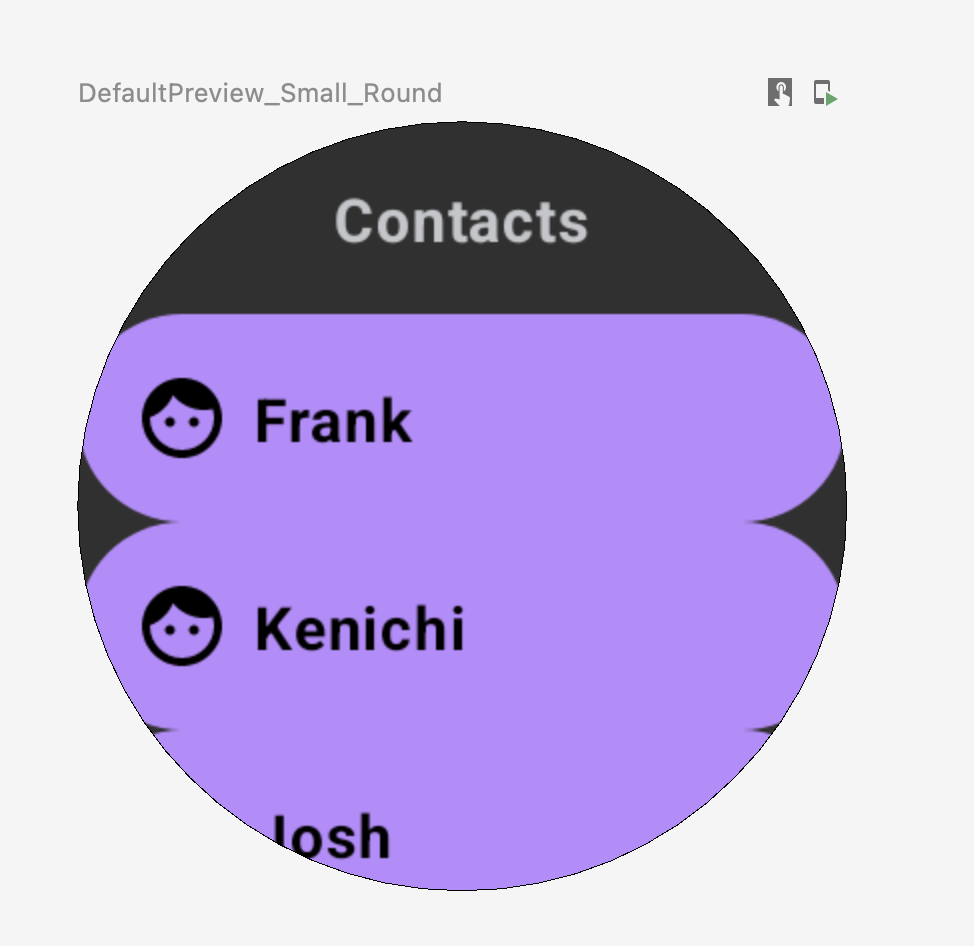
Search for ContactListScreenV0 and replace LazyColumn with ScalingLazyColumn like this.
ScalingLazyColumn {
item {
ListHeader {
Text(text = "Contacts")
}
}
// ...
Here is a helpful tip about the preview feature. It's called Interactive Mode. On the preview screen, just click the Start Interactive Mode button like this. You can enable this feature and check your animation without launching an Emulator.
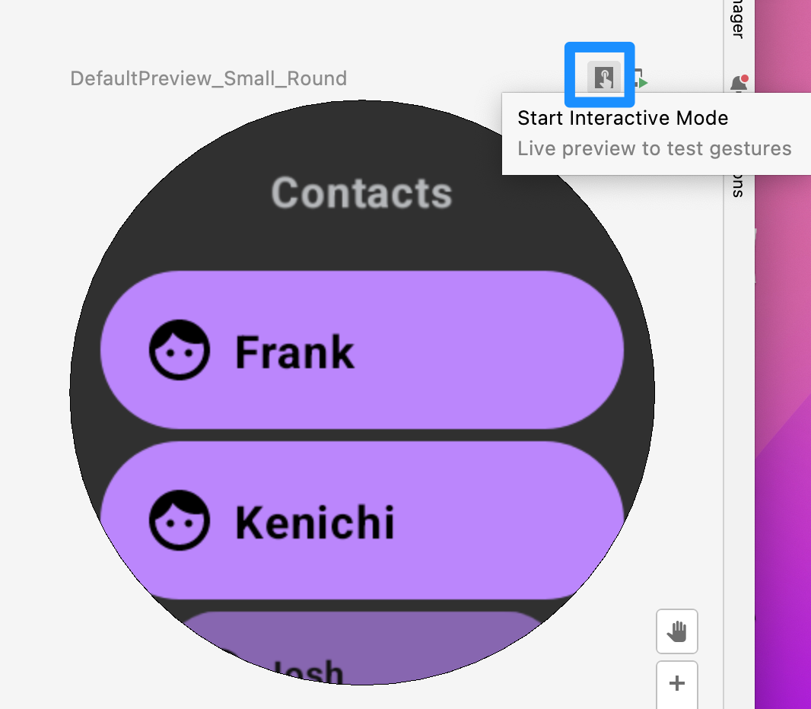
Of course, you can disable this feature like this.

Result
Your screen should be improved like this. Of course, instead of using Interactive Mode, you can use an Emulator to check the behavior.
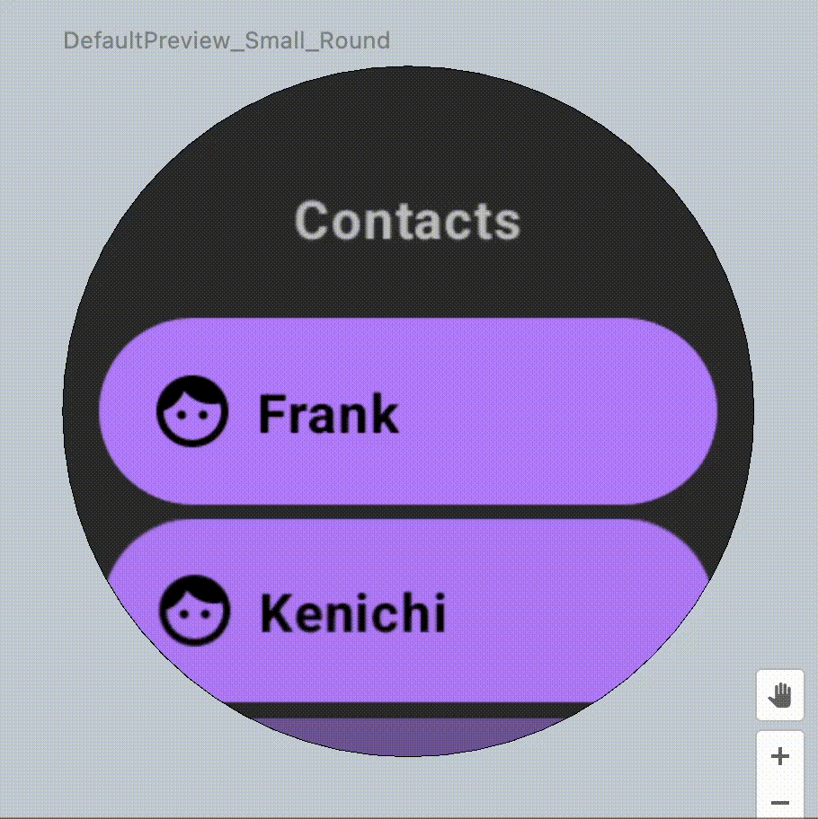
But there are still some problems.
Here are three essential points to develop a better UI for Wear OS.
- TimeText
- Vignette
- PositionIndicator
Using a Scaffold , you can quickly implement them.
Search for ContactListScreenV0 and implement it like this.
val listState = rememberScalingLazyListState()
Scaffold(
timeText = {
if (!listState.isScrollInProgress) {
TimeText()
}
},
vignette = {
Vignette(
vignettePosition = VignettePosition.TopAndBottom
)
},
positionIndicator = {
PositionIndicator(
scalingLazyListState = listState,
)
}
) {
ScalingLazyColumn(state = listState) {
item {
ListHeader {
Text(text = "Contacts")
}
}
items(model.data.size) {
Chip(
modifier = Modifier
.fillMaxSize(),
icon = {
Icon(
Icons.Rounded.Face,
contentDescription = "faceIcon",
)
},
label = { Text(model.data[it].name) },
colors = ChipDefaults.primaryChipColors(),
onClick = { },
)
}
}
}
Result
Your screen should be improved like this. This new screen includes TimeText, Vignette, and PositionIndicator.

But this app includes only one screen. So we cannot check each contact detail.
What we'd like to develop
Let's add a new screen, the Contact Detail screen. Search for ContactDetailScreen and implement it like this.
@Composable
fun ContactDetailScreen(id: Int) {
// Add your STEP3 code here
Chip(
modifier = Modifier
.fillMaxSize(),
icon = {
Icon(
Icons.Rounded.Face,
contentDescription = "faceIcon",
)
},
label = {
Column(
) {
Text(text = model.data[id].name, fontWeight = FontWeight.Bold)
Text(text = model.data[id].phone)
Text(text = model.data[id].nation)
}
},
colors = ChipDefaults.primaryChipColors(),
onClick = { /* do anything */ },
)
}
To confirm the behavior of the new screen, change the content of WearApp() like this.
@Composable
fun WearApp() {
WearOSComposeCodelabTheme {
ContactDetailScreen(0)
}
}
Result
You'll be able to see the change like this.
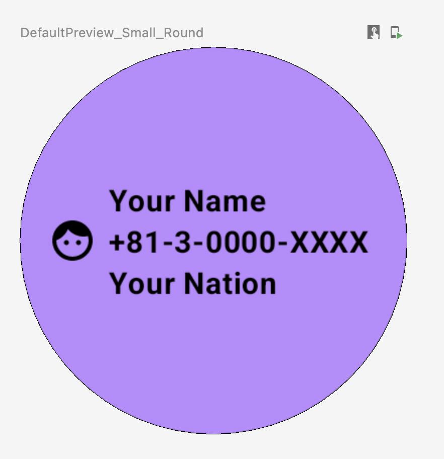
But this app doesn't include any Navigation features. So we cannot move to another screen.
Let's add a new Navigation feature to move to another screen. First, search for ContactListScreenV0 and add an argument like this.
@Composable
fun ContactListScreenV0(navController: NavHostController) {
// ...
}
Next, on the ScalingLazyColumn part, add an implementation like this.
Chip(
// ...
onClick = { navController.navigate("contact_detail/$it") },
)
Finally, let's add the Navigation feature. Search for ScreenNavigationV4 and implement it like this.
@Composable
fun ScreenNavigationV4(
navController: NavHostController = rememberNavController()
) {
// Add your STEP4 code here
NavHost(
navController = navController,
startDestination = "contact_list"
) {
composable("contact_list") {
ContactListScreenV0(navController = navController)
}
composable("contact_detail/{id}") {
val id = it.arguments?.getString("id")!!
ContactDetailScreen(id = id.toInt())
}
}
}
To change the launch screen, change the content of WearApp() like this.
@Composable
fun WearApp() {
WearOSComposeCodelabTheme {
ScreenNavigationV4()
}
}
Result
Let's launch the app on the Emulator or the real device. You'll be able to move to another screen like this.
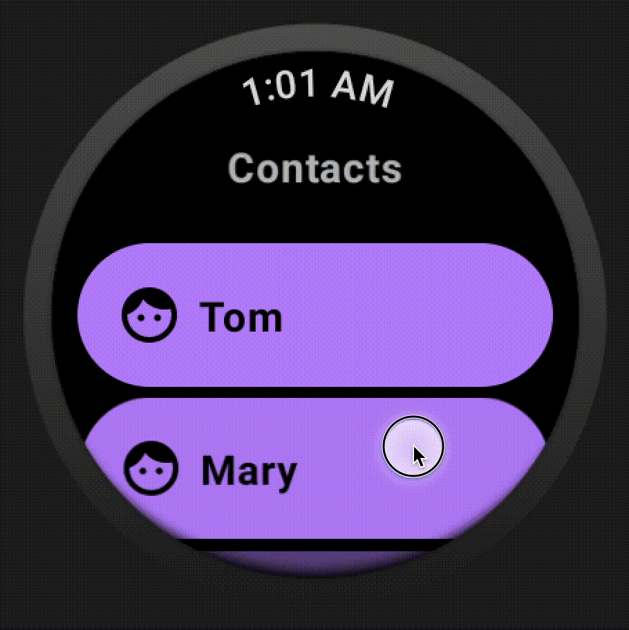
But if you try to move back to the previous screen, you won't be able to do that. So it's because there is still a problem.
Here is an essential point to implement a Navigation feature for Wear OS. Using Wear Navigation instead of Regular Navigation is required.
Let's import the Wear Navigation library by opening build.gradle under this module like this.
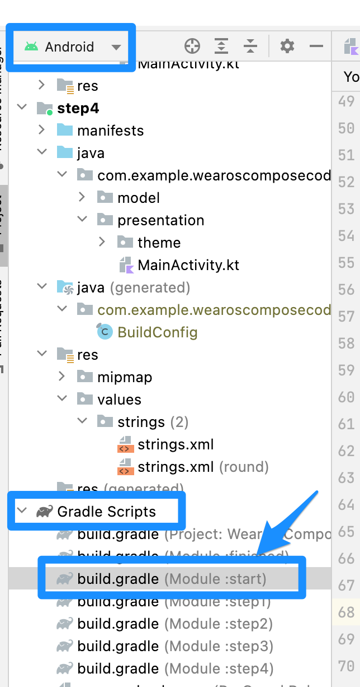
Modify like this. It means that disabling Non Wear Navigation Part and enabling Wear Navigation Part.
// Non Wear Navigation
// def nav_version = "2.5.2"
// implementation "androidx.navigation:navigation-compose:$nav_version"
// Wear Navigation
implementation "androidx.wear.compose:compose-navigation:$wear_compose_version"
After that, sync the project to import the new library.
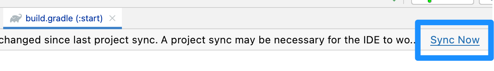
You'll see some errors on MainActivity. It means we have to modify some critical definitions like this.
// for supporting Non-Wear Navigation --from--
//import androidx.navigation.NavHost
//import androidx.navigation.NavHostController
//import androidx.navigation.compose.NavHost
//import androidx.navigation.compose.rememberNavController
//import androidx.navigation.compose.composable
// for supporting Non-Wear Navigation --to--
// for supporting Wear Navigation --from-
import androidx.wear.compose.navigation.SwipeDismissableNavHost
import androidx.wear.compose.navigation.composable
import androidx.navigation.NavHostController
import androidx.wear.compose.navigation.rememberSwipeDismissableNavController
// for supporting Wear Navigation --to--
Maybe you'll still see some errors. Don't worry. On ScreenNavigationV4() function, you have to change your code like this. Here are two changes. First, instead of using rememberNavController(), use rememberSwipeDismissableNavController(). Second, instead of using NavHost, use SwipeDismissableNavHost.
fun ScreenNavigationV4(
navController: NavHostController = rememberSwipeDismissableNavController()
) {
SwipeDismissableNavHost(
navController = navController,
startDestination = "contact_list"
) {
composable("contact_list") {
ContactListScreenV4(navController = navController)
}
composable("contact_detail/{id}") {
val id = it.arguments?.getString("id")!!
ContactDetailScreen(id = id.toInt())
}
}
}
)
Result
Let's launch the app on the Emulator or the real device again. You'll be able to move to another screen and back to the previous screen like this.
Congratulations! That's it.
You learned how to build and improve your app for Wear OS! Here are some more valuable materials by Google.
We made this tutorial with reference to them.
Happy Wear OS Apps coding!